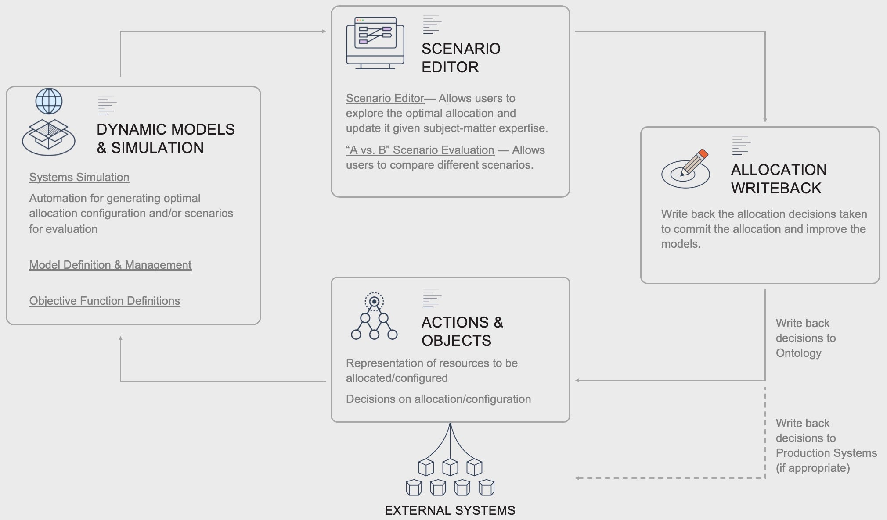
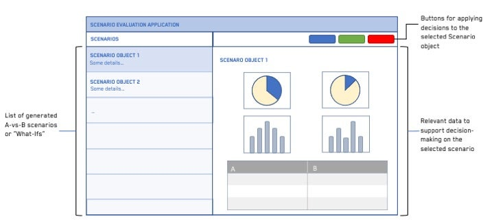

Organizations decide every day how to allocate their resources, whether it is determining which products to produce, allocating a portfolio of EV-charging stations to maximize return on investment, or consolidating shipments to save on shipping costs.
By creating a digital twin of the organizationâs operational reality, Foundry leverages the digital representation of the organization to drive and optimize resource allocation decisions.

Resource allocation and optimization is the task of employing available resources in a way that maximizes or minimizes specific objectives under a set of constraints. Organizations are faced with a variety of such allocation and optimization problems.
Resource allocation and optimization workflows require organizations to collate, clean, transform, and model relevant data such that optimal allocation decisions can be made. This is often done through specialized software operating on top of a single data source that cannot be adapted to new realities and changing organizational dynamics, or through painstaking collation of multitude data sources, spanning a multitude of spreadsheets and databases. This leads to:
Using Foundry, organizations are able to create closed-loop allocation optimization workflows that allow for repeatable, timely decision-making, use the complete data picture, and can adapt and improve over time as the organizational environment evolves.
First, subject-matter experts identify objective functions that should be maximized or minimized, identify the relevant dynamics, and define the system and its constraints. Relevant data that must be collected and integrated from source systems is identified. This is often an iterative process where Contour and Quiver are used to drill into the data and understand what is feasible.
Related products:
System dynamics, objective functions, and constraints are codified through Functions on Objects or learned through observation with ML-models that can be developed in Code Workbook and managed with Foundry ML. The Foundry ML suite integrates Machine Learning, Artificial Intelligence, Statistical, and Mathematical models with key components of the Foundry ecosystem and allow models to be operationalized and their performance monitored over time.
In the EV Charging Station Allocation use case, geographic data, financial data, and features of the portfolio of potential charging stations are brought together and scored.
Customers are also able to leverage 3rd party simulation and optimization tooling by connecting to them via Data Connection.
Related products:
Simulated optimal allocations, scenario candidates, or âWhat-Ifâ scenarios are generated through automated Transforms. The optimal allocations or scenario alternatives can be explored and evaluated in no- to low-code applications constructed in Workshop or Slate applications.

For example, in the Load Utilization Improvement use case, users are presented with suggested opportunities to consolidate shipments (truck-loads) in order to save on shipping costs. A Load Planner reviews an Opportunity Dashboard for potential consolidation opportunities that include the shipments they are responsible for and notifies the relevant stakeholders (plant, customer, carrier, etc.). These opportunities take into account extra stops, rescheduled pickup/delivery appointments, and plant/customer constraints. The Load Planner then Approves, Rejects, Consolidates, or Reassigns the Opportunity.
Writeback of allocation decisions along with the context in which each decision was made means that the predicted versus actual outcome can be compared and evaluated over time. Improved decisions are achieved through improvement in model accuracy by training of new models on the observations or through updates to the codified dynamics.
Related products:
Regardless of the Pattern used, the underlying data foundation is constructed from pipelines and syncs to external source systems.
Data integration pipelines
Data integration pipelines, written in a variety of languages including SQL, Python, and Java, are used to integrate datasources into the subject matter ontology.
Foundry can sync data from a wide array of sources, including FTP, JDBC, REST API, and S3. Syncing data from a variety of sources and compiling the most complete source of truth possible is key to enabling the highest value decisions.
Want more information on this use case pattern? Looking to implement something similar? Get started with Palantir. â